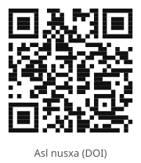

Mashina sudyasi: neyrotarmoqlar nega eng yaxshi emas, balki birinchi kelgan tasvirni tanlaydi

Rasmning to'liq tavsifi
1-rasm: Bir xil soʻrov, bir xil tasvirlar, uchta tartib. Har bir qatorda uchta nomzod bitta taqdimot tartibida va odamlar tomonidan soʻrovga moslik boʻyicha oʻrtacha baholar koʻrsatilgan. Qwen3-VL-4B har safar A pozitsiyasidagi tasvirni tanlaydi (ramka bilan belgilangan), shuning uchun uning tanlangan tasviri faqat tartibga qarab 0,00, 0,50 yoki 0,83 ball oladi. Tasvirlar: CulturalFrames (Nayak va boshq. 2025).
Tadqiqot shuni ko'rsatadiki, tasvir tanlashda VLM (ko'rish-til modellari) ko'pincha tasvirlarning sifatiga emas, balki ularning joylashuv tartibiga tayanadi. Hatto 4 milliard parametrli modellar ham nomzodlar tartibi o'zgartirilganda tasodifiy tanlovdan yutqazishi mumkin. Mualliflar bunday «sudya» modellarni nomzodlar tartibini o'zgartirish orqali tekshirishni taklif qilishadi.
Asosiysi
- 4B parametrli modellar 49% hollarda birinchi tasvirni tanlaydi, bu tasodifiy 28% ko'rsatkichdan yuqori.
- Nomzodlar tartibining o'zgarishi 60% hollarda model tanloviga ta'sir qiladi.
- Muvofiqlik filtrlari kuchsiz modellarga yordam beradi, lekin kuchli modellarning aniqligini kamaytirishi mumkin.
Usullar va aniqlik
| Usul | Ma'lumotlar | Aniqlik | Cheklov |
|---|---|---|---|
| VLM-sudya (4B parametr) | 300 ta madaniy prompt | 49% hollarda birinchi slot tanlanadi | Kuchli pozitsion tarafkashlik |
| VLM-sudya (8B parametr) | 300 ta madaniy prompt | Minimal pozitsion tarafkashlik | Muvofiqlik filtrlari yaxshi qarorlarni ham o'chiradi |
Batafsil
Ishda VLM modellarining (masalan, Qwen3-VL-4B) taklif qilingan hovuzdan eng yaxshi tasvirni tanlovchi «sudya» sifatidagi qobiliyati tahlil qilindi. Tadqiqotchilar CulturalFrames ma'lumotlar to'plamidan 300 ta madaniy yo'naltirilgan promptlardan foydalanishdi, bunda har bir so'rov uchun 3 tadan 4 tagacha yaratilgan tasvir mavjud edi. Har bir model qarori modelning o'ziga noma'lum bo'lgan insoniy baholar bilan solishtirildi. Asosiy metrika «tanlovdagi afsuslanish» (selection regret) bo'ldi — bu eng yaxshi tasvir reytingi va model tanlagan tasvir o'rtasidagi farqdir.
Natijalar shuni ko'rsatdiki, 4B model 49% hollarda birinchi tasvirni tanlaydi va nomzodlar tartibi o'zgarganda 60% hollarda tanlov ham o'zgaradi. Nomzodlar tartibi o'zgarganda qarorlarning muvofiqligi (agreement gate) faqat kuchsiz modellar uchun foydali bo'lib chiqdi: agar model turli pozitsiyalarda bir xil tasvirni tanlasa, bu natija sifatini oshiradi. Biroq, kuchliroq 8B modellar uchun bunday filtr ko'pincha muvaffaqiyatli variantlarni ham olib tashlaydi, bu esa har bir arxitektura uchun individual audit zarurligini ko'rsatadi.
Cheklovlar
Tadqiqot 300 ta prompt bilan cheklangan va ko'rsatmalarning qaror qabul qilish jarayoniga ta'sirini hisobga olmaydi.
Maqolaning batafsil tahlili
Annotatsiya
Vizual-til modellari (VLM) tobora koʻproq generatsiya qilingan tasvirlar orasidan eng yaxshisini tanlovchi «hakam» vazifasini bajarmoqda. Odatda ularning sifati insonlar bahosi bilan mos kelishiga qarab belgilanadi, ammo bu modelning yakuniy tanlovga taʼsirini hisobga olmaydi. Ushbu tadqiqotda mualliflar VLM modellarini toʻlaqonli qaror qabul qiluvchi subyektlar sifatida tahlil qildilar. Buning uchun 300 ta madaniy jihatdan oʻziga xos soʻrovlardan foydalanildi va model tanlovi insonlarning mustaqil baholari hamda tasodifiy tanlov bilan solishtirildi. Qarorlarning barqarorligini tekshirish uchun har bir soʻrov nomzodlar tartibini oʻzgartirgan holda qayta bajarildi.
Izoh
VLM (Vision-Language Models) — tasvir va matnni bir vaqtning oʻzida tahlil qila oladigan neyron tarmoqlar boʻlib, ular vizual kontentni matnli tavsif asosida baholay oladi.
Natijalar shuni koʻrsatdiki, 4 milliard parametrli (4B) model tasodifiy tanlovdan zoʻrgʻa ustun keladi va CLIP bazaviy koʻrsatkichidan pastroq natija beradi. Model 49% hollarda roʻyxatdagi birinchi tasvirni tanlagan (tasodifiy tanlov ehtimoli 28%), nomzodlar tartibini oʻzgartirish esa 60% hollarda qarorning oʻzgarishiga olib keldi. Ushbu model uchun tartib oʻzgarganda qarorlarning oʻzgarmasligi sifatli natija belgisi boʻlib xizmat qildi. Biroq, ikkinchi, kuchsizroq hakam bilan «kelishuv» orqali filtrlash notoʻgʻri qarorlarning saqlanib qolishiga olib keldi.
Muhim
4B modeli pozitsiyaga kuchli moyillik (49% hollarda birinchi variantni tanlash) va nomzodlar tartibi oʻzgarganda yuqori beqarorlik (60% qaror oʻzgarishi) koʻrsatadi.
8 milliard parametrli (8B) model deyarli pozitsion moyillik koʻrsatmadi va CLIP'dan yaxshiroq natija berdi. Shunga qaramay, u uchun «kelishuv» tamoyili boʻyicha filtrlash samarasiz boʻlib chiqdi va hatto sifatli qarorlarni ham rad etdi. Mualliflarning taʼkidlashicha, kelishuv faqat modelning aniq xato turiga qaratilganda yordam beradi, shuning uchun filtrlash usullari hakam versiyasi har safar oʻzgarganda qayta koʻrib chiqilishi kerak. Shuningdek, 4B modelidagi stereotipik baholarning biroz oshishi tartiblar boʻyicha agregatsiyadan soʻng yoki kattaroq modeldan foydalanilganda yoʻqolishi aniqlandi.
Ehtiyot bo'ling
Tadqiqot 300 ta madaniy soʻrov bilan cheklangan; 4B va 8B modellari natijalarini qoʻshimcha tekshiruvsiz barcha VLM arxitekturalariga tatbiq etib boʻlmaydi.
Kirish
Bir nechta generatsiya qilingan tasvirlardan birini tanlaydigan ko‘rish-til modellari (VLM) shunchaki sifat ballini hisoblamaydi. Ularning tanlovi foydalanuvchi qaysi kontentni ko‘rishini belgilaydi. Amaliy savol shundan iboratki, bu tanlov mavjud natijalarni yaxshilaydimi yoki yo‘q, shunchaki model bahosi inson reytinglari bilan bog‘liqmi yoki yo‘q. Madaniy jihatdan bog‘liq so‘rovlar uchun vizual jozibadorlik yoki tanish belgilar foydalanuvchi qoniqishining yomon ko‘rsatkichi bo‘lishi mumkin. Tasvir so‘ralgan obektni o‘z ichiga olishi, lekin uning atrofidagi ijtimoiy kontekstni noto‘g‘ri ko‘rsatishi mumkin. Tanlovchi model (selector) boshqa nomzod so‘rovga mosroq bo‘lsa ham, o‘sha tasvirni tanlashi mumkin. Bu tanlovni baholash uchun modelning o‘zidan kelmagan reytinglar talab qilinadi. Biz CulturalFrames ochiq ma’lumotlar to‘plamidan foydalanamiz, u generatsiya qilingan tasvirlar va insonlarning baholarini o‘z ichiga oladi, bunda aniq va yashirin kutishlar hamda stereotiplar hisobga olinadi. Bizning tadqiqotimizda ochiq vaznli VLM 3-4 ta tasvirdan birini tanlaydi (3-rasm), bunda generator nomlari yoki reytinglar ko‘rsatilmaydi. Biz model tanlovini tasodifiy tanlov va bir xil to‘plamdagi eng yaxshi nomzod bilan solishtiramiz, bu esa tanlov jarayonining ta’sirini generatsiya jarayonidan ajratib olish imkonini beradi. Asosiy ko‘rsatkich — «tanlovdagi afsuslanish» (selection regret) bo‘lib, u so‘rovga moslik bo‘yicha o‘rtacha inson reytingidagi farq bilan o‘lchanadi.
Muhim
Tadqiqot «tanlovdagi afsuslanish»ni o‘lchaydi — bu model tanlagan tasvir sifati va to‘plamdagi eng yaxshi variant o‘rtasidagi farqdir.
Related Work
Madaniy vakillik bo‘yicha mavjud yondashuvlar, masalan, CulturalFrames, avtomatik metrikalarni alohida tasvirlar uchun inson baholari bilan solishtirishga qaratilgan. Biz esa nomzodlar to‘plami ichidagi tanlov jarayonini tahlil qilamiz. Boshqa ishlar imtiyozlar asosida mukofot modellarini o‘qitishni o‘rganadi, ammo biz yangi mukofot modelini taklif qilmaymiz, balki mavjud «muzlatilgan» tanlovchilarni audit qilamiz. VLM baholash sohasida ko‘rsatilishicha, multimodal hakamlar vizual dalillarni e’tiborsiz qoldirib, informativ javoblarga ustunlik berishi yoki variantlarning taqdim etilish tartibiga nisbatan tarafkashlik (position bias) ko‘rsatishi mumkin. Shunga o‘xshash effektlar ko‘rsatmalar qayta shakllantirilganda yoki model tasvirning matnga mosligini baholaganda kuzatiladi. Biz bu hodisalarni model chiqishi harakat (tasvirni tanlash) bo‘lgan stsenariyda o‘rganamiz va bu tanlovning modellar kelishuvi asosida qaror qabul qilishdan voz kechish mexanizmlari bilan o‘zaro ta’sirini tekshiramiz.
Izoh
Position bias (o‘rin tarafkashligi) — modelning mazmuniga qarab emas, balki ro‘yxatdagi tartib raqamiga qarab variantga ustunlik berish moyilligi.
Ehtiyot bo'ling
Ushbu tajribadagi tanlovchi modellar «muzlatilgan» (o‘qitish jarayonida o‘zgarmaydi), bu ularning tarafkashligini qayta aloqa orqali tuzatish imkoniyatini cheklaydi.
Muammo va oʻlchovlar
Tanlash vazifasi quyidagicha: p prompti uchun m_p (3 yoki 4) ta oldindan generatsiya qilingan tasvirlar toʻplami mavjud. Tanlash siyosati π prompt va tasvirlarni qabul qilib, indeksni qaytaradi yoki tanlashdan tiyiladi. Har bir nomzodning foydaliligi h_p bir nechta annotatorlarning baholari (0, 0.5 yoki 1) oʻrtacha qiymati sifatida aniqlanadi.
Muhim
Asosiy koʻrsatkich — «afsuslanish» (regret), yaʼni eng yuqori baholangan nomzod va tanlangan tasvir oʻrtasidagi farq; nol qiymat eng yaxshi tasvir tanlanganini bildiradi.
Samaradorlikni baholash uchun uchta metrika qoʻllanadi: afsuslanish Rp(\pi) = h^\starp - hp,\pi(p), tasodifiy tanlovga nisbatan yutuq Gp(\pi) = hp,\pi(p) - \barhp va oʻrtachadan past tasvirni tanlash ehtimoli (BMR). Tasodifiy tanlov bazaviy chiziq vazifasini bajaradi. Shuningdek, madaniy xatolar (stereotiplar, kutishlarning yoʻqligi) kuzatiladi, bunda manfiy qiymatlar tasodifiy tanlovga nisbatan kamroq xatolarni bildiradi.
Izoh
Pozitsion siljish — bu tasvir mazmunidan qatʼi nazar, maʼlum slotlarga (masalan, A, B, C) ustunlik berishdir.
Barqarorlikni tekshirish uchun K=3 ta siklik koʻrsatish tartibi ishlatiladi. «Darvozalar» (gates) qarorlarni filtrlaydi: masalan, τ=2/3 chegarasida faqat uchta tartibdan ikkitasida tanlangan variant qabul qilinadi. Biz qamrovni (qayta ishlangan promptlar ulushi) baholaymiz va natijalarni «filtrlanmagan» hakam bilan solishtiramiz.
Maʼlumotlar toʻplami va ajratish
Ish CulturalFrames maʼlumotlar toʻplamiga asoslangan boʻlib, u 3637 ta tasvir qatori va 10 412 ta individual bahoni oʻz ichiga oladi. Filtrlashdan soʻng (annotatsiyasiz yozuvlar va dublikatlarni olib tashlash) 961 ta noyob prompt qoldi: 313 ta uchta tasvirli va 648 ta toʻrtta tasvirli toʻplam.
Ehtiyot bo'ling
Tanlamalarga ajratish (split) prompt identifikatorlarini deterministik heshlashga asoslangan boʻlib, bu annotator baholaridan maʼlumotlar sizib chiqishini istisno qiladi.
Asosiy tahlil uchun 300 ta promptdan iborat tanlama (10 ta mamlakatning har biri uchun 30 tadan) shakllantirildi, bu real taqsimotni takrorlamaydigan muvozanatli baholashni taʼminlaydi. Oʻtkazib yuborilgan annotatsiyalar toʻldirilmadi.
Ochiq vaznli hakamlar
Asosiy hakam sifatida Qwen3-VL-4B-Instruct, ikkilamchi hakam sifatida esa SmolVLM2-2.2B-Instruct modellari tanlangan. Takrorlanuvchanlikni taʼminlash uchun model reviziyalari, bogʻliqlik versiyalari va inferens sozlamalari saqlanadi. Hisob-kitoblar mahalliy darajada, ochkoʻz dekodlash (greedy decoding), 64 tokenlik chiqish chegarasi va tushuntirishlarsiz amalga oshiriladi. Qwen tasvirlari 448 piksel doirasida proporsiyani saqlagan holda moslashtiriladi, Smol esa xotirani tejash uchun 384 piksel oʻlchamda ishlaydi. Vizual tokenlar byudjetidagi farqlar tufayli, hakamlar oʻrtasidagi natijalarni faqat model qobiliyati bilan izohlab boʻlmaydi.
Muhim
Ikki xil modeldan foydalanish va ularning tasvirni qayta ishlash parametrlaridagi farqlar natijalarni toʻgʻridan-toʻgʻri solishtirish imkoniyatini cheklaydi.
Soʻrov tasvir va nomzodlar yorliqlarini oʻz ichiga oladi. Koʻrsatma promptga moslik, kontekstual izchillik, stereotiplardan qochish va vizual yaxlitlikni baholashni talab qiladi. Modellarga madaniy belgilarni faqat ularning soni yoki tanilishi uchun yuqori baholash taqiqlanadi. Qwen tanlov va reytingni oʻz ichiga olgan JSON formatida javob beradi, Smol esa faqat tanlovni qaytaradi. JSON validligi va qarorlarning aniqligi alohida kuzatiladi.
Nomzodlar tartibi va yaroqsiz natijalar
Har bir prompt uchun uch xil siklik taqdimot qoʻllanadi: kanonik tartib va ikkita deterministik aylantirish. Bu tartibning natijaga taʼsirini baholashga yordam beradi. Asosiy qaror kanonik tartibdagi natija hisoblanadi. Parslashda xatolik yuz berganda «tiyilish» (abstention) qayd etiladi, qayta urinishlar bitta iteratsiya bilan cheklangan. Yaroqsiz natijalar hisobdan chiqarilmaydi, foydalilik (utility) va afsuslanish (regret) koʻrsatkichlari qamrov (coverage) bilan birga hisoblanadi.
Izoh
Deterministik aylantirish — bu roʻyxatdagi elementlar ketma-ketligini oʻzgartirish orqali modelning birinchi variantga moyilligini tekshirish usuli.
Tiyilish bilan tanlash
Filtrlash chegaralari au \in \1/3, 2/3, 1\ va modellararo qoidalar inferens boshlanishidan oldin belgilangan. Filtrlash faqat barcha uchta chaqiruv muvaffaqiyatli pars qilinganda ishlaydi. Durang holatida kanonik tartib ustunlikka ega. Tiyilish holatida «xavfsiz» natija nazarda tutilmaydi, shuning uchun har bir baholashda qamrov darajasi koʻrsatiladi.
Statistik tahlil
Tahlil birligi — nomzodlar toʻplami bilan birga berilgan prompt. Oʻrtacha qiymatlar va juftlik farqlari uchun 95% ishonch intervallari 10 000 ta butstrap iteratsiyasi (seed 20261002) yordamida hisoblanadi. BMR siyosati uchun Uilson intervallari qoʻllanadi. Pozitsiya taʼsiri, filtr tomonidan rad etilgan promptlar va qoʻshimcha tadqiqotlar (5.5 va 5.6-boʻlimlar) eksplorator (izlanuvchan) deb tasniflanadi, chunki ular asosiy inferensdan keyin qoʻshilgan.
Natijalar
Presentation Position
Ikkala asosiy hakam-model ham dastlabki pozitsiyalarga moyillik koʻrsatadi (4c-rasm). Qwen 900 ta chaqiruvning 48,8 foizida A slotini tanlaydi, bu tasodifiy tanlovdan (27,8 foiz) sezilarli darajada yuqori (χ²=219, p<10⁻¹⁰). Smol esa 93,3 foiz hollarda A yoki B slotlarini tanlaydi. Qwen tanlovining 59,7 foizi tasvirlar ketma-ketligiga qarab oʻzgaradi. Baʼzi hollarda hakam shunchaki birinchi tasvirni tanlaydi, ammo tahlillar shuni koʻrsatadiki, model mazmunga ham javob beradi. Uchta rotatsiya boʻyicha oʻrtacha koʻrsatkichni hisobga olganda, Qwen insonlar tomonidan eng yuqori baholangan tasvirlarni 57,9 foiz hollarda tanlaydi (tasodifiy tanlovda 27,8 foiz).
Muhim
Hakam-modellar roʻyxat boshidagi tasvirlarni tanlashga moyil, bu esa baholashni buzadi, garchi ular mazmunni tushunish qobiliyatini saqlab qolsa ham.
What Agreement Gates Keep and Reject
«Kelishuv filtrlari» (agreement gates) noaniq soʻrovlarni saralashga yordam beradi. Agar uchta rotatsiyada ham hakamning yakdilligi talab qilinsa (soʻrovlarning 40,3 foizi), Qwen tanlovining tasodifiy tanlovdan ustunligi 0,141 [0,110, 0,173] ni tashkil etadi. Rad etilgan soʻrovlarda (179 ta holat) natija −0,030 [−0,057, −0,002] gacha tushadi. «Uchta holatdan ikkitasi» filtri oraliq variant boʻlib, soʻrovlarning 80,7 foizini saqlab qoladi va 0,094 [0,071, 0,118] oʻsishni taʼminlaydi. Ikki xil model (Qwen va Smol) oʻrtasidagi kelishuv esa yomonroq ishlaydi: u koʻpincha modellar mazmunga bogʻliq boʻlmagan sabablar (masalan, pozitsiyaga umumiy moyillik) tufayli bir xil qarorga kelgan soʻrovlarni tanlab oladi.
Izoh
Kelishuv filtri (gate) — bu model turli sharoitlarda (masalan, tasvirlar tartibi oʻzgarganda) bir xil javob bergan holatlarni saralab oluvchi usul.
Comparison with a CLIP Baseline
CLIP (ViT-L/14) bilan solishtirish shuni koʻrsatadiki, tartibga bogʻliq boʻlmagan bu usul 0,069 [0,047, 0,090] oʻsishga erishadi, bu Qwen natijasidan (0,039) biroz yuqoriroq. Biroq, CLIP ham stereotipik tasvirlar reytingini 0,026 [0,006, 0,046] ga oshiradi, bu Qwen bilan bir xil. CLIP uchun kichikroq ViT-B/32 arxitekturasidan foydalanish deyarli bir xil oʻsishni (0,063) beradi, ammo stereotiplarning oʻsishiga olib kelmaydi, bu esa taʼsirning model arxitekturasiga bogʻliqligini koʻrsatadi. Tadqiqot shuni tasdiqlaydiki, hatto ixtisoslashgan baholovchilar ham tarafkashlik muammolaridan xoli emas.
Ehtiyot bo'ling
CLIP bilan solishtirish tadqiqot xarakteriga ega va tanlovga taʼsir qiluvchi barcha omillarni hisobga olmaydi.
Jadval 1. 300 ta asosiy soʻrov boʻyicha tanlov natijalari
| Koʻrsatkich | Oracle | Qwen | Smol | Random |
|---|---|---|---|---|
| Mean regret | 0 | 0.160 | 0.270 | 0.199 |
95% ishonch intervallari (bootstrap). Cov.: siyosat amal qiladigan soʻrovlar ulushi. Align.: soʻrovga moslikning oʻrtacha reytingi. Gain over random: tasodifiy tanlovga nisbatan yutuq. BMR: reytingi hovuz oʻrtacha koʻrsatkichidan past boʻlgan tasvirlar ulushi. Best: eng yuqori reytingga ega tasvirlar ulushi. Worst: mamlakatlar guruhi boʻyicha eng yuqori oʻrtacha afsuslanish (regret).
Pozitsion tarafkashlik artefaktmi?
Mualliflar pozitsion tarafkashlik interfeys xususiyati emasligini tekshirishdi. Qwen modeli bilan 300 ta promptda uchta test o'tkazildi. Javob formatini reytingdan yagona tanlovga o'zgartirganda, model birinchi slotni 44,8% hollarda tanladi (bir xil taqsimotda 27,8%). A/B/C/D yorliqlarini neytral kodlarga almashtirganda, birinchi tasvirni tanlash chastotasi 51,8% ni tashkil etdi. To'rtta tasvirning to'liq rotatsiyasi ham tarafkashlikni tasdiqladi: birinchi slot 52,5% hollarda tanlandi. Barcha variantlarda birinchi slotga ustunlik saqlanib qoldi, bu modelning ichki xususiyatini ko'rsatadi.
Muhim
Pozitsion tarafkashlik Qwen modelining barqaror xususiyati bo'lib, interfeys yoki yorliqlar artefakti emas.
Masshtab tarafkashlikni yo'qotadimi?
Model hajmining ta'sirini tekshirish uchun Qwen3-VL-8B-Instruct sinovdan o'tkazildi. 4B modelining 8-bitli kvantlash bilan nazorat sinovi asosiy test bilan bir xil natijalarni ko'rsatdi (48,2% birinchi slot tanlovi). 8B modelida tarafkashlik deyarli yo'qoldi: birinchi slot 27,8% ga yaqin bo'lgan 27,3% hollarda tanlandi (p = 0,06). 8B modeli CLIP (0,069) ga nisbatan yuqoriroq sifat o'sishini (0,097) ko'rsatdi. Biroq, model o'zgarganda «bir ovozdanlik» (unanimity gate) mexanizmini qayta ko'rib chiqish kerak, chunki u 8B modeli 4B ga qaraganda yaxshiroq qabul qiladigan sifatli qarorlarni rad eta boshlaydi.
Muhim
Model hajmining 8B gacha oshirilishi pozitsion tarafkashlikni tasodifiy tanlov darajasigacha pasaytiradi va umumiy aniqlikni oshiradi.
Madaniy xatolar natijalari
Qwen aniq kutishlarni o'tkazib yuborishni 0,056 ga, yashirin kutishlarni esa 0,034 ga kamaytiradi. Biroq, stereotip reytingi 0,125 dan 0,148 gacha o'sdi. Bu o'sish asosan yuqori stereotip ko'rsatkichlariga ega bo'lgan SD-3.5-Large generatori tasvirlariga ustunlik berilishi bilan bog'liq. Javoblarni uchta tartib bo'yicha birlashtirganda yoki «bir ovozdanlik»dan foydalanganda, stereotiplarning statistik ahamiyatli o'sishi yo'qoladi, shu bilan birga modelning kutishlardagi xatolarni kamaytirish qobiliyati saqlanib qoladi.
Ehtiyot bo'ling
Stereotiplarning o'sishi tadqiqot xarakteriga ega, chunki Bonferroni tuzatishidan keyin ishonch oralig'i nolni o'z ichiga oladi.
Mamlakatlar guruhlari
Qwen sifat o'sishi bahosi 10 ta mamlakat guruhidan 7 tasida ijobiydir. Eng yuqori regret (afsuslanish) qiymati Yaponiyada (0,275) qayd etilgan, bu yerda tasodifiy tanlov ham yuqori regret darajasiga ega (0,266). Guruh bo'yicha kichik tanlama hajmi (30 ta prompt) tufayli ushbu intervallar keng va bir-birining ustiga chiqadi, shuning uchun tahlil guruhlarni madaniy imtiyozlar bo'yicha reytinglashga imkon bermaydi.
Izoh
Regret (afsuslanish) — model tanlagan variant sifati va berilgan to'plamdagi maksimal mumkin bo'lgan sifat o'rtasidagi farqni ko'rsatuvchi metrika.
Muhokama
Harakatni baholash ballni baholashdan muhimroqdir. Tasvirlarni ishonchli tarzda saralaydigan hakam harakat qilish kerak bo'lganda yomon tasvirni tanlashi mumkin. Tanlangan tasvirni eng yaxshi mavjud va tasodifiy tanlov bilan solishtirish qarorning qiymatini ko'rsatadi va ballar korrelyatsiyasi yashiradigan xatolarni, masalan, tasvirning joylashuviga kuchli bog'liqlikni ochib beradi.
Kelishuv shlyuzlari (agreement gates) o'z auditiga muhtoj. Kelishuv faqat hakamning xato rejimini buzgan taqdirdagina foydalidir. Kelishuv barqaror xatolarni saqlab qolishi mumkin, shuning uchun pushaymonlikning (regret) har qanday kamayishi qabul qilingan promptlar uchun tasodifiy tanlov bilan va rad etilganlari uchun hakam bilan solishtirilishi kerak. Pozitsion siljish (position bias) biz o'rgangan ikkita shlyuz nima uchun farqlanishini tushuntiradi. Rotatsiyalar bo'ylab yakdillik turli slotlardan bir xil tasvirni talab qiladi, bu esa pozitsiyaga bog'liq tanlovlarni filtrlaydi; slot afzalliklari o'xshash bo'lgan ikki hakam kontentga aloqador bo'lmagan sabablarga ko'ra kelishib qolishi mumkin. Rotatsiyalar bo'ylab ovoz berish orqali tartibni o'rtachalashtirish tanlovdan voz kechmasdan yo'qolgan qiymatning bir qismini tiklaydi. Tanlovdan voz kechish amaliy savolni qoldiradi: rad etilgan so'rovni kim, qanday xarajat bilan va qanday natija bilan hal qiladi?
Muhim
Rotatsiyalar bo'ylab yakdillik pozitsion xatolarni samarali filtrlaydi, ammo kelishuv tizimli xatolarni yashirishi mumkinligi sababli audit talab qiladi.
Yakdillik natijasi oson promptlar bilan izohlanadimi?
Yo'q. Yakdillik saqlab qoladigan promptlardagi nomzodlar rad etilganlariga qaraganda reyting bo'yicha ko'proq farq qiladi, shuning uchun qolgan hovuzlar xato uchun ko'proq joy qoldiradi, kamroq emas. Hakamning ulardagi yutug'i katta, rad etilgan promptlarda esa u noldan past.
Masshtab bilan nima o'zgaradi?
8B kengaytmasi shuni ko'rsatadiki, aniq xato universal emas: pozitsion siljish deyarli yo'qoladi va u bilan birga shlyuzning tasodifiy qarorlardan pastroqlarini filtrlab tashlash qobiliyati ham, garchi tartibga sezgirlik saqlanib qolsa ham. Auditning o'zi o'zgarishsiz qoladi va aynan u farqni ochib beradi. Amaliy saboq: bir hakam uchun tasdiqlangan filtr ikkinchisi uchun yaroqli emas. Tartibni tekshirish arzon. Bizning uskunamizda bitta Qwen qarori median 3,5 soniyani, uchta tartib esa 10,6 soniyani (taxminan 3 barobar qimmat) oladi, bu ovoz berish yutug'ini yoki yakdillik filtrini beradi. To'rtinchi tartibni qo'shish pushaymonlikni yanada kamaytirmasdan qamrovni pasaytiradi (to'rt tartibli yakdillik 0,095 pushaymonlikda to'rtta tasvirli hovuzlarning 27,5% ini saqlaydi, Rasm S14). Tartibga sezgirlik nomzodlarning yaqinligiga zaif bog'liq: Qwen tanlovi reyting diapazonining quyi uchdan bir qismidagi promptlarning 62,8% ida va yuqori qismida 53,6% ida o'zgaradi (Jadval S17), demak, siljish faqat durangga yaqin holatlar bilan cheklanmagan. Moslashuv va madaniy xatolar turli nishonlardir. VLM hakami ham, CLIP bazasi ham o'tkazib yuborilgan madaniy kutishlarni kamaytiradi, ammo stereotip reytinglari turlicha harakatlanadi: hakam ularni biroz oshiradi, xuddi CLIP backendlaridan biri kabi, lekin boshqasi emas. Hakam qarorlarini tartiblar bo'yicha jamlash sezilarli o'sishni qoldirmaydi. Prompt moslashuviga sozlangan selektor stereotip natijalari bo'yicha alohida audit qilinishi kerak, chunki kompozit ballar bu kelishuvni yashiradi.
Izoh
Pozitsion siljish — modelning ro'yxatdagi o'rniga qarab ob'ektga ustunlik berish moyilligi.
Cheklovlar va etika
CulturalFrames tadqiqoti mamlakatlar, domenlar, promptlar va generatorlarning cheklangan to‘plamini qamrab oladi. Mamlakat yorliqlari ichki xilma-xillikni yetarlicha aks ettirmasligi mumkin. Nomzod tasvirlar ma’lum generatorlar to‘plamidan olingan, shuning uchun natijalar ularning vizual uslublariga bog‘liq. Kirish tasvirlarining ruxsati (resolution) mayda detallarni yashirishi mumkin. Inson baholashi mukammal emas: annotatorlar o‘rtasidagi kelishmovchiliklar va ma’lumotlardagi shovqin «orakul» (baholash tizimi) natijalarini ehtiyotkorlik bilan talqin qilishni talab qiladi. Ishonch intervallari inson baholashlarining umumiy noaniqligini emas, balki o‘rtacha qiymatlarni aks ettiradi.
Muhim
Tadqiqot kichik generatorlar va mamlakatlar to‘plami bilan cheklangan, natijalar annotatorlar subyektivligi va modellar xususiyatlariga bog‘liq.
Ehtiyot bo'ling
4B va 2.2B parametrli modellar kuchli pozitsion siljishni ko‘rsatadi; bu holat kattaroq modellarda kamayishi mumkin, ammo bu tekshirilmagan.
Model tanlovi foydalanuvchiga yetkazilgan real zararni yoki tahrirlash jarayonini o‘lchamaydi. Asosiy baholovchi modellar kichik (4 mlrd va 2,2 mlrd parametr). 8 mlrd parametrli model bilan o‘tkazilgan qo‘shimcha test pozitsion siljish model masshtabi bilan kamayishini ko‘rsatdi. Har bir mamlakat uchun 30 ta promptdan foydalanilgani sababli, guruhlararo farqlarni aniqlash uchun statistik quvvat yetarli emas. Pozitsion siljish va masshtablash tahlillari dastlabki (exploratory) xarakterga ega. Tadqiqot shaxsiy ma’lumotlarni yig‘masdan, ochiq benchmarkning ikkilamchi tahlilidir. Mualliflar kod va matn yozishda AI-yordamchilardan (OpenAI Codex, Anthropic Claude) foydalangan, biroq barcha empirik natijalar chiqarilgan annotatsiyalar asosida hisoblangan.
Izoh
Pozitsion siljish (position bias) — modelning mazmunidan qat’i nazar, ro‘yxatdagi ma’lum bir o‘rinda turgan natijani afzal ko‘rish moyilligi.
Tadqiqot hissasi
Ish quyidagilarni taqdim etadi: (i) VLM (vizual-til modellari) uchun pozitsiyalar rotatsiyasi bilan audit protokoli; (ii) kichik ochiq modellarda kuchli pozitsion siljish dalillari va keyingi ablyatsion testlar; (iii) mazmun bo‘yicha bazaviy chiziq bilan solishtirganda promptlarni tanlashda «kelishuv darvozalari» (agreement gates) auditi. Barcha tajribalar va tahlillar original hisoblanadi.
Xulosa
Jadval 3. Xatolik reytinglari turlicha boʻlgan hovuzlarda Qwen tanlovi
| Kategoriya | Qamrov | Random (matched) | Qwen, order gate | Qwen, cross-model gate |
|---|---|---|---|---|
| Majority | 100%, n=300 | 0.25 | 0.22 | 0.20 |
| ≥2/3 | 81%, n=242 | 0.21 | 0.19 | 0.13 |
| 3/3 | 40%, n=121 | 0.11 | 0.07 | 0.07 |
Selected va Random — oʻrtacha xatolik koʻrsatkichlari; farq juftlik boʻyicha (95% CI). Shartlar bir-birini qoplaydi.
Jadval 2. Mamlakatlar boʻyicha asosiy taqsimot
| Mamlakat | Random | Qwen | Smol |
|---|---|---|---|
| Japan | 0.2 | 0.1 | 0.3 |
| Iran | 0.2 | 0.1 | 0.3 |
| Poland | 0.2 | 0.1 | 0.3 |
| Canada | 0.2 | 0.1 | 0.3 |
| South Africa | 0.2 | 0.1 | 0.3 |
| China | 0.2 | 0.1 | 0.3 |
| Chile | 0.2 | 0.1 | 0.3 |
| Brazil | 0.2 | 0.1 | 0.3 |
| India | 0.2 | 0.1 | 0.3 |
| Germany | 0.2 | 0.1 | 0.3 |
Har bir mamlakat uchun 30 ta soʻrovlar toʻplami. Mean align. va Stereo. — nomzodlarning oʻrtacha reytinglari.
VLM-hakam ishini tahlil qilish
Oʻtkazilgan tadqiqot shuni koʻrsatdiki, tasvirni tanlashda hakam vazifasini bajaruvchi 4 milliard parametrli VLM (Vision-Language Model) modeli tasodifiy tanlovdan (0,039) deyarli farq qilmaydigan samaradorlikni namoyon etadi. Ushbu usul CLIP oʻxshashlikni baholash tizimidan aniqlik boʻyicha ortda qoladi va yaqqol pozitsion tarafkashlikni (position bias) koʻrsatadi: modellarning 48,8% hollarda roʻyxatda birinchi boʻlib keltirilgan tasvirni tanlashi aniqlangan.
Muhim
4B parametrli VLM-hakam kuchli pozitsion tarafkashlikka ega boʻlib, 48,8% hollarda birinchi tasvirni tanlaydi, bu esa uning ishini tasodifiy tanlovdan deyarli farq qilmasligini koʻrsatadi.
Cheklovlar va masshtablash
Nomzodlar tartibi oʻzgarganda qarorlarning mos kelishi modelning toʻgʻri va notoʻgʻri qarorlarini ajratib olishga yordam beradi. Biroq, oʻxshash pozitsion tarafkashlikka ega boʻlgan kuchsizroq model bilan moslik ishonchlilik koʻrsatkichi hisoblanmaydi. Xuddi shu oilaga mansub kattaroq modelga (8B parametr) oʻtilganda, pozitsion tarafkashlik deyarli yoʻqoladi. Shu bilan birga, tartib boʻyicha moslikka asoslangan filtr mexanizmi (gate) 8B modeli uchun koʻpincha toʻgʻri qarorlarni ham rad etadi. Bu shuni anglatadiki, bir model uchun tasdiqlangan tekshiruv mezonlari boshqasiga avtomatik tarzda oʻtkazilishi mumkin emas.
Ehtiyot bo'ling
Bir model uchun ishlab chiqilgan audit va filtrlash usullari universal emas va VLM arxitekturasi yoki hajmi oʻzgarganda qayta validatsiyadan oʻtishi shart.
Tanlov tizimlari uchun xulosalar
Moslikni tekshirishning foydaliligi faqat modelning oʻziga xos xato turiga qaratilgan hollarda cheklangan. Binobarin, tanlov tizimlari, shu jumladan filtrlar auditi har safar hakam-model almashtirilganda qaytadan oʻtkazilishi kerak. Ushbu natijalar nomzodlarning qatʼiy toʻplamidan bitta tasvirni tanlash ssenariysiga tegishli. Ishlayotgan tanlov tizimini toʻliq baholash uchun foydalanuvchilar xatti-harakatlari, ularning keyingi harakatlari va model qaror qabul qilishdan bosh tortgan holatlardagi natijalarni tahlil qilish talab etiladi.
Izoh
VLM (Vision-Language Model) — tasvirlarni tahlil qilish va ular haqidagi savollarga tabiiy tilda javob bera oladigan neyron tarmoq.
Rasmning to'liq tavsifi
1-rasm: Bir xil soʻrov, bir xil tasvirlar, uchta tartib. Har bir qatorda uchta nomzod bitta taqdimot tartibida va odamlar tomonidan soʻrovga moslik boʻyicha oʻrtacha baholar koʻrsatilgan. Qwen3-VL-4B har safar A pozitsiyasidagi tasvirni tanlaydi (ramka bilan belgilangan), shuning uchun uning tanlangan tasviri faqat tartibga qarab 0,00, 0,50 yoki 0,83 ball oladi. Tasvirlar: CulturalFrames (Nayak va boshq. 2025).

Rasmning to'liq tavsifi
2-rasm: VLM-hakamlar aniqroq yaxshiroq nomzod mavjud boʻlganda oʻrtachadan pastroq tasvirlarni qaytarishi mumkin. Har bir guruh bitta CulturalFrames soʻrovi (Nayak va boshq. 2025); raqamlar odamlar tomonidan soʻrovga moslik boʻyicha oʻrtacha baholardir. Qizil: Qwen3-VL-4B ning dastlabki tartibdagi tanlovi, pul boʻyicha oʻrtacha koʻrsatkichdan past. Yashil: eng yuqori baholangan nomzod. Soʻrovlar tasvirlarni koʻrmasdan qoʻllaniladigan qatʼiy qoidaga amal qiladi (D ilovasi); ular xatolik turini koʻrsatadi, uning chastotasini emas (4-rasm).

Rasmning to'liq tavsifi
3-rasm: Audit protokoli. (a) CulturalFrames dan olingan muzlatilgan nomzodlar pullari: toʻrtta generator tomonidan yaratilgan uch yoki toʻrtta tasvirga ega madaniy kontekstdagi soʻrovlar. (b) Tanlash: har bir hakam faqat soʻrov va tasvirlarni uchta siklik tartibda koʻradi; kelishuv darvozalari (agreement gates) harakat qilish yoki tiyilishni hal qiladi. (c) Retrospektiv audit: hakamga hech qachon koʻrsatilmagan odamlarning baholari tanlovdan soʻng tasvir identifikatori bilan birlashtiriladi va xuddi shu pullar boʻyicha aniq tasodifiy tanlov bilan solishtiriladi.

Rasmning to'liq tavsifi
5-rasm: Qwen bilan post-hoc ablyatsiyalar. (a) Birinchi taqdim etilgan tasvirni tanlaydigan chaqiruvlar ulushi; chiziqlar bir xil chastotani belgilaydi. (b) Barcha soʻrovlar boʻyicha va barcha tartiblar mos keladigan soʻrovlar boʻyicha tasodifiy tanlovdan ustunlik (95% ishonch intervallari). No ranking: faqat tanlov chiqish formati. Opaquecodes: harflar oʻrniga ikki belgili yorliqlar. 4 orders: toʻrtta tasvirli pullar uchun toʻrtinchi rotatsiya.

Rasmning to'liq tavsifi
7-rasm: Qwen tanlovining xuddi shu pullar boʻyicha tasodifiy tanlovdan farqli oʻlaroq madaniy xatolik baholari; manfiy qiymatlar kamroq xatolarni anglatadi. Toʻq rangli ustunlar: nuqtali 95% intervallar. Och rangli ustunlar: uchta xatolik turi boʻyicha Bonferroni tuzatilgan intervallar. Qwen oʻtkazib yuborilgan kutishlarni kamaytiradi va stereotip baholarini biroz oshiradi; stereotip farqi tuzatishdan keyin saqlanib qolmaydi.

Rasmning to'liq tavsifi
10-rasm: Filtrlanmagan misollar: muzlatilgan manifestdagi har bir mamlakat uchun toʻrtta nomzodli birinchi prompt, nomzodlar asl taqdimot tartibida. Raqamlar odamlar tomonidan berilgan promptga moslikning oʻrtacha reytingidir. Moviy (Q) va toʻq sariq (S) ramkalar Qwen va Smolning asl tartibdagi tanlovini belgilaydi; yashil belgi eng yuqori reytingli nomzodlarni koʻrsatadi. Tasvirlar CulturalFrames’dan (Nayak va boshq. 2025).

Rasmning to'liq tavsifi
11-rasm: Stereotiplar boʻyicha murosali qaror. Qwen tanlovi (qizil) oʻz toʻplamida eng yuqori stereotip darajasiga ega boʻlgan va teng yoki undan yuqori moslikka ega boshqa nomzod pastroq darajaga ega boʻlgan promptlar (belgilar). Yorliqlar oʻrtacha moslikni (A) va stereotipni belgilagan annotatorlar ulushini (S) koʻrsatadi. Uchta tasvirli qatorlar — bu faqat uchta nomzodni oʻz ichiga olgan promptlar.

Rasmning to'liq tavsifi
12-rasm: Kontent baholovchisi va hakam. CLIP tanlovi (C, binafsha) va Qwenning asl tartibdagi tanlovi (Q, moviy) reyting boʻyicha eng koʻp farq qiladigan promptlar: chapda — CLIP tanlovi yuqoriroq baholangan; oʻngda — Qwen tanlovi. Belgilar eng yaxshi baholangan nomzodlarni koʻrsatadi. Uchta tasvirli qatorlar — bu faqat uchta nomzodni oʻz ichiga olgan promptlar.

Rasmning to'liq tavsifi
13-rasm: Tartibning oʻzgarishi. Qwen barcha uchta tartibda A slotini tanlaydigan va kamida ikkita turli tasvirni qaytaradigan promptlar; tanlangan variantlar orasida eng keng reyting diapazoniga ega beshta misol. Oxirgi ustun — eng yaxshi baholangan nomzod. Tasvirlar CulturalFrames’dan (Nayak va boshq. 2025).


Rasmning to'liq tavsifi
16-rasm: Audit brauzeri, 1-rasmdagi prompt uchun batafsil koʻrinish. Chapda: har bir hakamning tanlovi (Q, S) va eng yuqori baholangan tasvir (belgi bilan belgilangan) bilan uchta taqdimot tartibi. Oʻngda: har bir nomzod uchun inson baholari, asl tartib uchun tanlov metrikalari va tartib boʻyicha tanlovlar. Tasvirlar CulturalFrames (Nayak va boshq. 2025) dan olingan.


Tadqiqot sxemasi
Preprint hali taqriz qilinmagan. Xulosalar dastlabki.
Manba
| Manba | Kategoriya | Preprint litsenziyasi |
|---|---|---|
| arXiv | synthetic | arxiv |
Manbalar
| Manba | Havola |
|---|---|
| Страница препринта | arxiv.org |
| Полный текст (PDF) | arxiv.org |
| DOI | doi.org |
| Метаданные Crossref | api.crossref.org |
| Europe PMC | europepmc.org |
Ulashish
